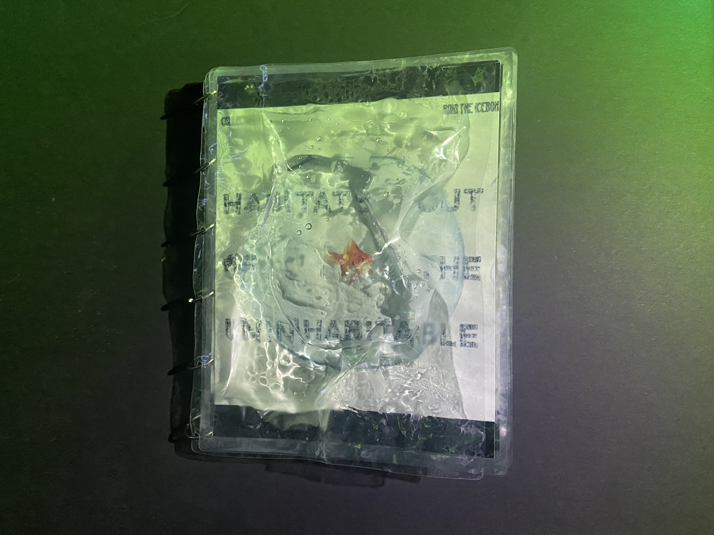
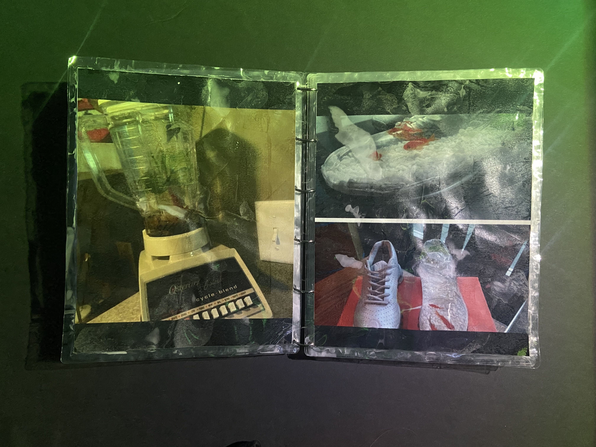
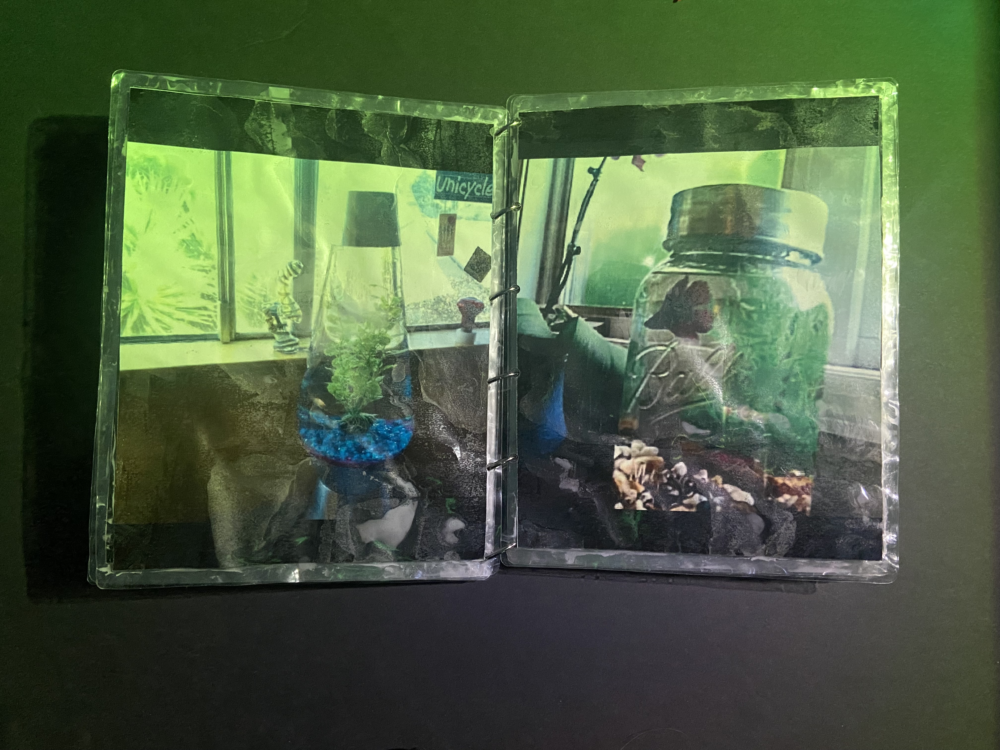
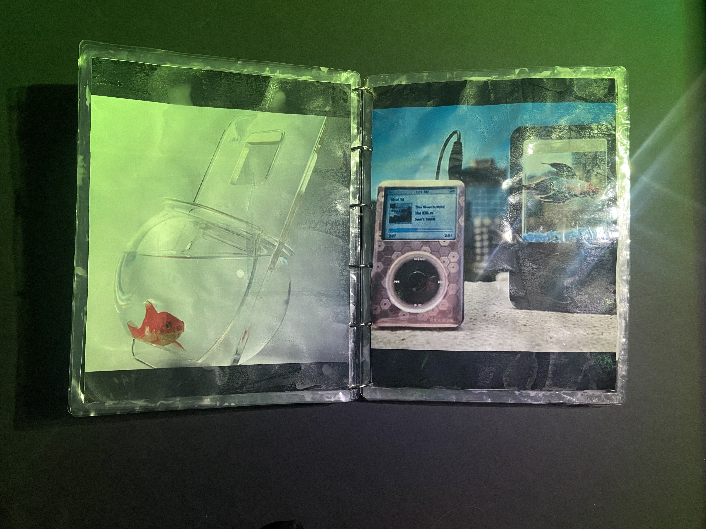
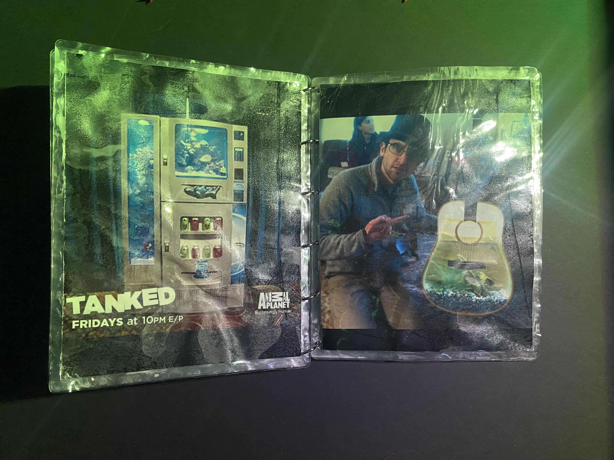
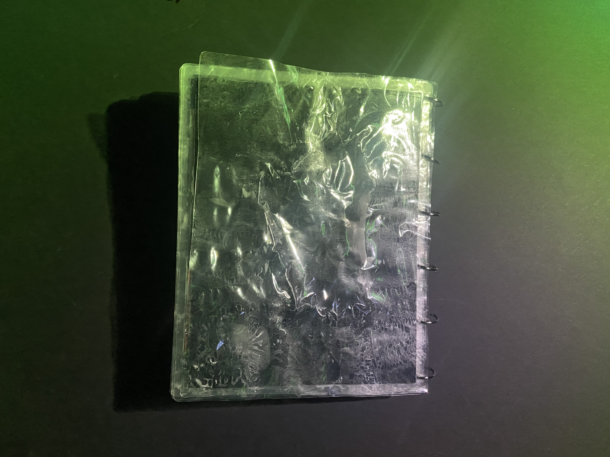

A book made from a web based collection. This collection is inspired by Tanked, a tv show aired on Animal Planet which involved taking unusual objects and turning them into magnificent aquariums. The book explores the idea of what makes a habitat "livable" in displaying the different unusual aquariums for the fish. Link to collection website
     